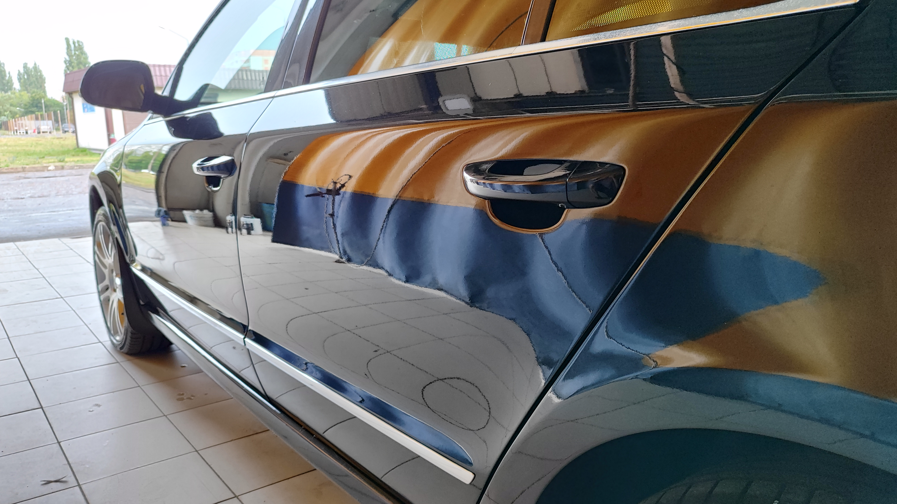
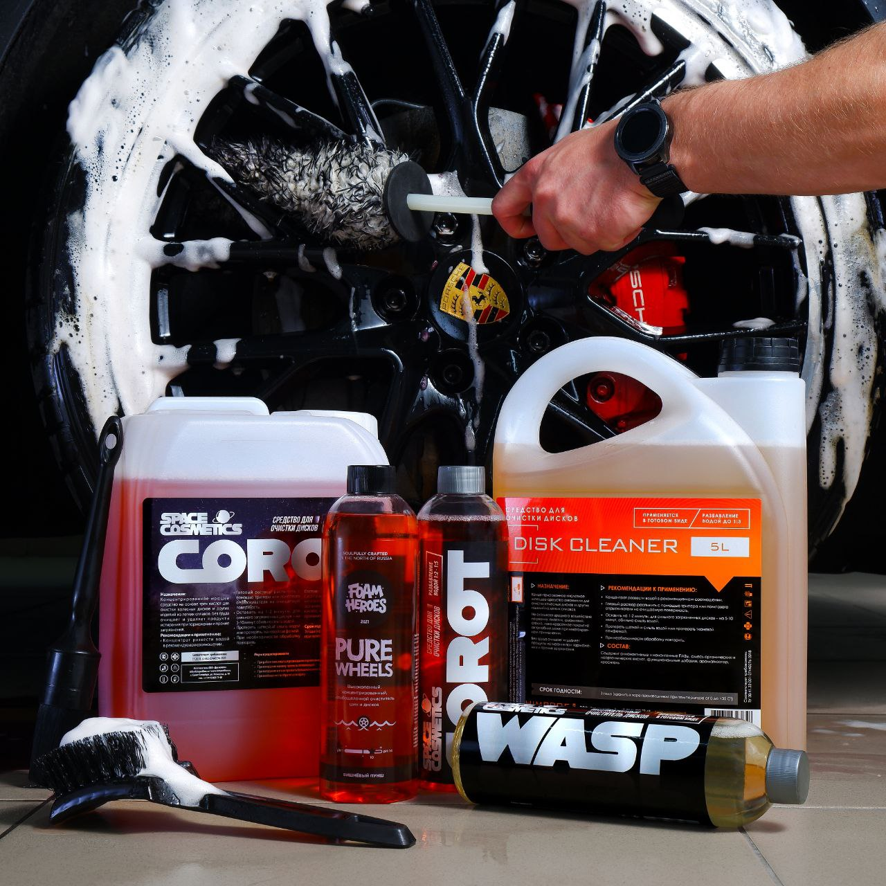

My name is detailer, but everybody calls me AVTOMOISTCHIK. Common, i'm not AVTOMOISTCHIK, i'm DETAILER! Короче рассказ пойдет о моем увлечении - об уходе за автомобилями. Но не просто об уходе, а о детейлинге.
Детейлинг (от англ. auto detailing) Здесь неплохо описано что это это процесс качественного и продвинутого ухода за автомобилем. Короче почитаете сами
Итак, что же необходимо для старта?
Для особо продвинутых, еще понадобится:
А имеем примерно следующее:
Вот это я делал сам: 

И пару картинок с интернета по заданию:
Вот такие могут быть у людей интересы
А это мое ведро: 
Попробуем еще видео подключить: Фига се, получилось!
Ну наверное хватит для первого раза, займемся css теперь